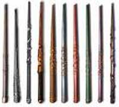

Gli utenti di magia possono creare le bacchette magiche a partire dall'8° livello di esperienza.
I) LA
BACCHETTA MAGICA VUOTA
Il primo passo per procedere alla creazione di una bacchetta magica è possedere
una bacchetta magica vuota.
La bacchetta magica vuota è un
Least Minor Enchantment
da
75
punti esperienza
e
150 monete d'oro di valore
(vedi).
Si tratta del supporto basilare per poter creare qualsiasi bacchetta magica dei
maghi.
II)
CARICARE LA BACCHETTA DI AURA MAGICA
Una volta ottenuta una
bacchetta magica vuota, il mago deve caricarla dell'aura magica della magia con
la quale desidera incantarla. In ogni bacchetta possono essere inseriti
fino a tre diversi incantesimi
dei maghi. Occorre ricordare che una bacchetta magica non può contenere le
seguenti tipologie di magie:
- Incantesimi di livello
di potere superiore al 3°.
- Incantesimi che abbiano raggio tocco o raggio pari a 0.
- Incantesimi che abbiano casting time pari o superiore ad 1 round.
- Incantesimi che
richiedano l'utilizzo di un componente materiale dal peso pari o superiore a 5
libbre.
Una volta selezionata la magia il mago che poi procederà ad incantare la
bacchetta dovrà infondere nella stessa l'aura magica (solo il mago che effettua
tale procedimento può poi incantare la bacchetta magica). Il procedimento
consiste nell'utilizzare la bacchetta magica vuota per lanciare la magia con la
quale intende incantarla in situazioni che lo impegnino seriamente (come ad
esempio nel corso di un combattimento impegnativo). La valutazione circa la
serietà della situazione concreta in cui il mago lancia l'incantesimo tramite la
bacchetta sarà di volta in volta rimessa all'apprezzamento del Dungeon Master.
Quando il mago carica la bacchetta lanciando la magia con cui desidera
successivamente incantarla applicherà le seguenti regole:
- Il mago non potrà in
alcun modo modificare il lancio della magia.
- La magia acquista un casting time minimo di 3.
- La magia si considera lanciata al 6° livello di lancio.
- Se la magia prevede un tiro salvezza contro incantesimi le creature che
subiscono gli effetti della stessa effettueranno, in suo luogo, un tiro salvezza
contro bacchette magiche (i tiri salvezza diversi da quelli contro incantesimi,
invece, non sono modificati). In ogni caso, indipendentemente dalla tipologia
del tiro salvezza effettuato, non si applicheranno ai tiri salvezza imposti
dalla magia lanciata con la bacchetta i modificatori dovuti alla
specializzazione del mago che la utilizza, al livello di potere della magia
lanciata ed alla differenza tra il livello di lancio della magia ed il
livello/dado vita della vittima.
Per il resto si seguiranno
le normali regole di lancio della magia come il pagamento dei punti magia,
l'utilizzo dei componenti materiali e il tiro relativo allo special/miss cast.
Ogni volta che il mago lancia la magia che desidera caricare nella bacchetta con
le suddette modalità otterrà
1 punto aura magica.
Il mago potrà, quindi, procedere ad incantare la bacchetta una volta che avrà
infuso nella stessa il richiesto ammontare di punti aura magica. L'ammontare di
punti aura magica richiesti dipende dal livello di potere e dal grado di
difficoltà della scuola primaria della magia con la quale desidera incantare la
bacchetta come indicato nel seguente schema:
| LIVELLO E GRADO | PUNTI AURA MAGICA RICHIESTI |
| 1° LVL - 1° Grado | 2 punto aura magica |
| 1° LVL - 2° Grado | 3 punti aura magica |
| 1° LVL - 3° Grado | 6 punti aura magica |
| 1° LVL - 4° Grado | 8 punti aura magica |
| 2° LVL - 1° Grado | 4 punti aura magica |
| 2° LVL - 2° Grado | 5 punti aura magica |
| 2° LVL - 3° Grado | 10 punti aura magica |
| 2° LVL - 4° Grado | 12 punti aura magica |
| 3° LVL - 1° Grado | 6 punti aura magica |
| 3° LVL - 2° Grado | 7 punti aura magica |
| 3° LVL - 3° Grado | 11 punti aura magica |
| 3° LVL - 4° Grado | 15 punti aura magica |
Qualora il mago decida di caricare nella bacchetta più di un incantesimo costui dovrà infondere interamente nella bacchetta i punti richiesti dalla magia a cui corrisponde il più elevato ammontare di punti aura e solo la metà (arrotondata per eccesso) dei punti aura richiesti per gli altri incantesimi.
III)
INCANTARE LA BACCHETTA MAGICA
Una volta caricata la
bacchetta magica con l'aura dell'incantesimo con il quale desidera incantarla il
mago può procedere ad incantarla.
1) IL
LABORATORIO MAGICO :
Il procedimento di incantamento deve essere effettuato presso un
laboratorio
magico. Il laboratorio per incantare le bacchette magiche è il medesimo
laboratorio utilizzabile per la creazione di
minor enchantment.
Il laboratorio, infatti, deve misurare almeno 80 metri quadrati e deve
essere dotato di strumentazione di precisione (alambicchi, bilance, lenti,
miscelatori, forni, ecc...) dal valore complessivo di 1000 monete d'oro
(manutenzione al costo di 15 corone mensili).
2) LA LIBRERIA MAGICA :
Il mago, inoltre, ha bisogno di una libreria specifica per la creazione delle bacchette magiche. Ogni scuola di magia necessita di differenti tomi. Per incantare una bacchetta magica con una magia di una determinata scuola, infatti, il mago deve disporre di almeno tre volumi su studi magici specializzai in quella determinata scuola. Ognuno dei quali ha un valore medio di 300 corone (manutenzione al costo di 2,25 corone mensili) ed un peso di 4 libbre.
3) TEMPO DI INCANTAMENTO :
Il tempo di incantamento dipende dal livello di potere e dal grado dell'incantesimo con il quale si vuole incantare la bacchetta come indicato nella seguente tabella:
| LIVELLO E GRADO | TEMPO DI LAVORO RICHIESTO |
| 1° LVL - 1° Grado | 10 giorni |
| 1° LVL - 2° Grado | 15 giorni |
| 1° LVL - 3° Grado | 30 giorni |
| 1° LVL - 4° Grado | 40 giorni |
| 2° LVL - 1° Grado | 20 giorni |
| 2° LVL - 2° Grado | 25 giorni |
| 2° LVL - 3° Grado | 50 giorni |
| 2° LVL - 4° Grado | 60 giorni |
| 3° LVL - 1° Grado | 30 giorni |
| 3° LVL - 2° Grado | 35 giorni |
| 3° LVL - 3° Grado | 55 giorni |
| 3° LVL - 4° Grado | 75 giorni |
Qualora il mago decida di caricare nella bacchetta più di un incantesimo costui dovrà impiegare interamente il tempo richiesto dalla magia a cui corrisponde il più elevato ammontare di giorni di lavoro e solo la metà (arrotondata per eccesso) dei giorni richiesti per gli altri incantesimi.
4) COSTI
DI PRODUZIONE :
Per la
produzione di una bacchetta magica il mago deve utilizzare un ammontare di
reagenti e polveri magiche pari ad un determinato ammontare del valore finale
della bacchetta magica. Il mago può decidere di utilizzare componenti magici in
misura ridotta, normale od abbondante. Questa scelta si ripercuoterà sulle % di
successo dello stesso nella produzione dell'oggetto magico, come in seguito
specificato.
|
AMMONTARE DI REAGENTI |
% DEL VALORE FINALE |
| Componenti magici in misura ridotta | 10 % |
| Componenti magici in misura comune | 15 % |
| Componenti magici in misura abbondante | 20 % |
Nel caso in cui sia scelto un incantesimo avente componente materiale che si consuma, a tale costo andranno addizionati reagenti supplementari pari a 100 volte il costo di un singolo componente materiale richiesto normalmente per il lancio dell'incantesimo (50 dosi se per il lancio della magia sono richieste due cariche e 33 dosi se per il lancio della magia ne sono richieste tre). Nel caso in cui sia scelto, invece, un incantesimo avente componente materiale che non consuma, a tale costo andranno addizionati reagenti supplementari pari al valore di un singolo componente materiale normalmente utilizzato per il lancio dell'incantesimo.
5) PERCENTUALE DI
SUCCESSO :
Al termine dei giorni di lavoro il mago potrà tirare un dado percentuale per
verificare se la creazione dell'oggetto ha avuto successo. Il mago potrà
ottenere i seguenti risultati:
Successo critico
(da 01 a 05
%)
:
Il procedimento di incantamento
sarà riuscito, la bacchetta magica otterrà il massimo di cariche possibili ed il
mago avrà anche risparmiato il 33% dell'ammontare di reagenti magici che aveva
deciso di utilizzare.
Successo
:
Il procedimento di incantamento
sarà riuscito, il mago potrà determinare l'ammontare di cariche possedute
(1d20+80).
Fallimento
: Il procedimento di incantamento
sarà fallito, il mago potrà però riprovare ad incantare la bacchetta utilizzando
un ammontare supplementare di reagenti pari al
2% del valore finale
della bacchetta ed un ammontare di
giorni pari ad 1/5 dell'ammontare
originario (arrotondato per eccesso). Al termine di tale periodo il mago potrà
ripetere il tiro percentuale per l'incantamento. Ad ogni tiro successivo al tiro
il mago otterrà un bonus
cumulativo di +1% alla
possibilità di successo ma al contempo
aumenterà cumulativamente dell'1%
la possibilità di falllimento critico.
Fallimento critico (da 96
a 100) : Il procedimento
di incantamento sarà fallito irreversibilmente, il mago avrà perso tempo e
risorse e la bacchetta magica vuota sarà distrutta al termine del procedimento.
Per determinare la percentuale di successo si valutino i seguenti modificatori:
PERCENTUALE BASE DI SUCCESSO: 33%
La percentuale base di successo va ridotta dell'ammontare previsto per la magia con il quale il mago vuole incantare la bacchetta magica. Se nella bacchetta sono caricate più magie sarà detratto interamente l'ammontare della magia con il valore più alto mentre le magie supplementari incideranno della metà della riduzione prevista (calcolata per eccesso).
| LIVELLO E GRADO | RIDUZIONE DELLA PERCENTUALE |
| 1° LVL - 1° Grado | - 3 % |
| 1° LVL - 2° Grado | - 5 % |
| 1° LVL - 3° Grado | - 10 % |
| 1° LVL - 4° Grado | - 13 % |
| 2° LVL - 1° Grado | - 6 % |
| 2° LVL - 2° Grado | - 8 % |
| 2° LVL - 3° Grado | - 16 % |
| 2° LVL - 4° Grado | - 20 % |
| 3° LVL - 1° Grado | - 11 % |
| 3° LVL - 2° Grado | - 12 % |
| 3° LVL - 3° Grado | - 18 % |
| 3° LVL - 4° Grado | - 25 % |
Alla percentuale base di successo vanno inoltre aggiunti i seguenti modificatori:
|
AMMONTARE DI REAGENTI |
MODIFICATORE % |
| Componenti magici in misura ridotta | - 5 % |
| Componenti magici in misura comune | nessuno |
| Componenti magici in misura abbondante | + 5 % |
|
LIBRERIA MAGICA |
MODIFICATORE % |
|
Per ogni volume oltre il
terzo nella scuola di magia dell'incantesimo (fino ad un massimo di dieci) |
+ 1 % (max. + 7 %) |
|
LIVELLO DI ESPERIENZA DEL MAGO |
MODIFICATORE % |
| Per ogni livello di esperienza raggiunto dal mago oltre l'ottavo | + 2 % |
|
CONOSCENZE MAGICHE |
MODIFICATORE % |
| Per il III grado di conoscenza in ogni livello di potere della scuola Enchantment | + 2 % |
| Per il III grado di conoscenza in ogni livello di potere della scuola dell'incantesimo | + 2 % |
|
COMPETENZE POSSEDUTE |
MODIFICATORE % |
| Se il mago riesce in una prova in Arcanology | + 5 % |
| Se il mago riesce in una prova in Thaumaturgy | + 3 % |
| Se il mago riesce in una prova in Spellcraft | + 2 % |
|
PUNTI AURA MAGICA SUPPLEMENTARI |
MODIFICATORE % |
| Per ogni punto aura magica infuso nella bacchetta oltre il minimo richiesto (max. +10 punti) | + 1 % (max. + 10 %) |
|
UTILIZZO DI RISORSE MISTICHE* |
MODIFICATORE % |
| Common Mystical Resource | + 3 % |
| Uncommon Mystical Resource | + 6 % |
| Rare Mystical Resource | + 12 % |
| Exotic Mystical Resource | + 21 % |
* Un'unica risorsa mistica può essere utilizzata nel procedimento di creazione di una bacchetta magica. Solo il mago che ha estratto la risorsa può utilizzarla validamente a tal fine. Si noti che possono solo essere utilizzate, nella creazione di bacchette magiche, le risorse mistiche corrispondenti alla scuola di magia della bacchetta (in caso di evocazione anche al suo elemento principale) o quelle legate ad un effetto particolare attinente all'incantesimo (o tutti gli incantesimi non potendosi utilizzare una risorsa mistica valida solo per uno di questi) con cui si vuole incantare la bacchetta.
6) PUNTI
ESPERIENZA BONUS
Qualora il mago riesca nella creazione di una bacchetta magica costui riceverà, la prima volta che riesce nella costruzione punti esperienza
pari al 100% di quelli della bacchetta magica, mentre le volte successive, punti esperienza
pari al 50% di quelli della bacchetta magica che ha creato. Ogni volta che, invece, costui
porti a compimento il tentativo senza riuscire ad incantare l'oggetto riceverà
un ammontare di punti esperienza pari al 25% di quelli
della bacchetta magica che ha provato a creare. Si noti che questi punti
esperienza saranno applicati unicamente al personaggio ed in nessuna misura ai
punti partenza.
Un mago che, avendo raggiunto l'ottavo livello di esperienza, sia riuscito nella creazione di una bacchetta magica per ognuno dei tre livelli di potere di incantesimi che queste possono contenere (ossia una bacchetta con una magia di 1° livello di potere, una bacchetta con una magia di 2° livello di potere ed una bacchetta con una magia di 3° livello di potere) ottiene un bonus costante del +3% ogni volta che ottiene punti esperienza. Si noti che questo bonus è applicato unicamente ai punti esperienza del personaggio e non ai punti partenza del giocatore. Inoltre, questo bonus si applica solo ai punti esperienza acquisiti dal personaggio nel corso delle sedute di gioco e non incide nei punti esperienza calcolati in fase di creazione del personaggio.